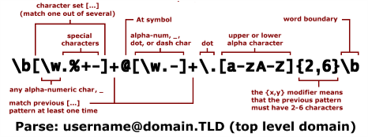
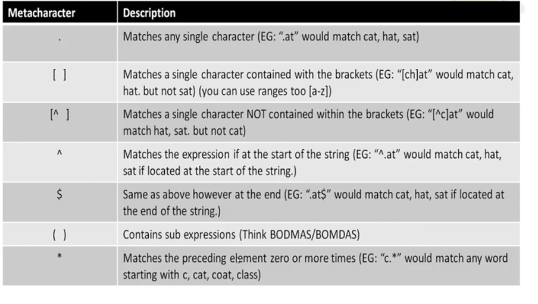
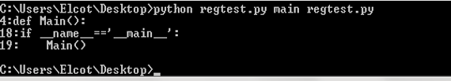

Regular Expression¶
The expressions is a string of characters.
There is 2 types of characters meta characters which have a special meaning & regular characters which have literal meaning.
Can be simple & easy to learn, however takes a long time to master & use advanced expressions

How it Works?¶
This is a few different algorithms that regular expressions can use.
The most common being a DFA or deterministic finite automation
The dfa algorithm is modified to use a pattern to specify its computation rules
The dfa algorithm takes o(2m) to construct the regular expressions( where m is the length of the regex pattern) the O(n) time to search of length n
Meta Characters¶

Matching & searching¶
Python gives us 2 base methods to use our regular expressions with
Match() ==> checks to see if the expression matches the entire string
Search() ==> checks to see if there is a match anywhere string
A basic test of match & search¶
When constructing an expression we use a raw string to avoid problems with python
This is just an r before the string: r’pattern
import re
line="i think i understand regular expressions"
matchresult=re.match('think',line,re.M|re.I)
if matchresult:
print("match found : "+matchresult.group())
else:
print("no match was found")
searchresult=re.search('think',line,re.M|re.I)
if searchresult:
print("search found : "+searchresult.group())
else:
print("no search was found")
no match was found
search found : think
Parse in the file¶
The following program should run in the command prompt
we should give 2 arguments while running
first one is searching word and
second one is in which file we need to search
import re
import argparse
def Main():
parser=argparse.ArgumentParser()
parser.add_argument('word',help="specif word to search for")
parser.add_argument('fname',help="specify file to search")
args=parser.parse_args()
searchfile=open(args.fname)
linenum=0
for line in searchfile.readlines():
line=line.strip('\n\r')
linenum+=1
searchresult=re.search(args.word,line,re.M|re.I)
if searchresult:
print(str(linenum)+':'+line)
if __name__=='__main__':
Main()
usage: ipykernel_launcher.py [-h] word fname
ipykernel_launcher.py: error: the following arguments are required: fname
An exception has occurred, use %tb to see the full traceback.
SystemExit: 2
c:\users\mohanapriya\anaconda3\envs\jbook\lib\site-packages\IPython\core\interactiveshell.py:3426: UserWarning: To exit: use 'exit', 'quit', or Ctrl-D.
warn("To exit: use 'exit', 'quit', or Ctrl-D.", stacklevel=1)
